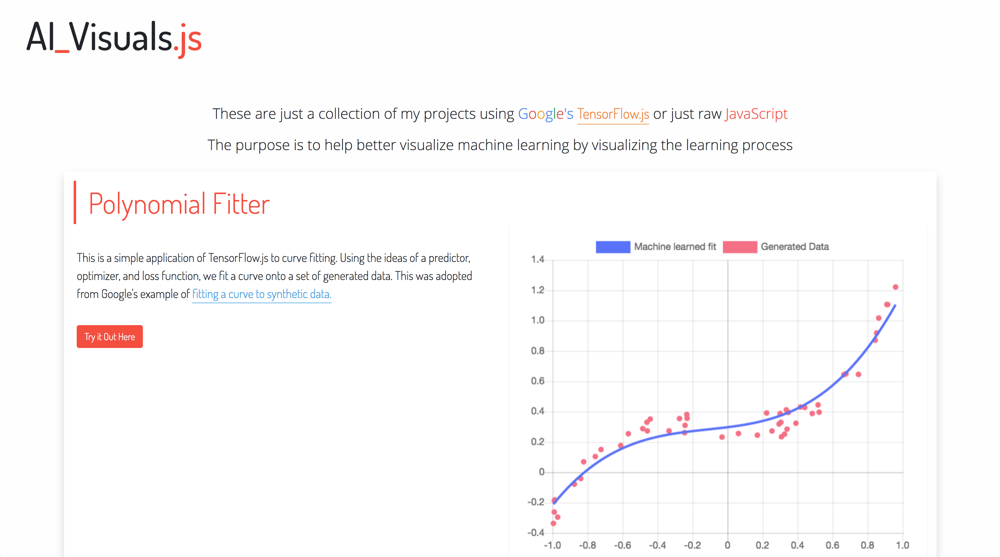
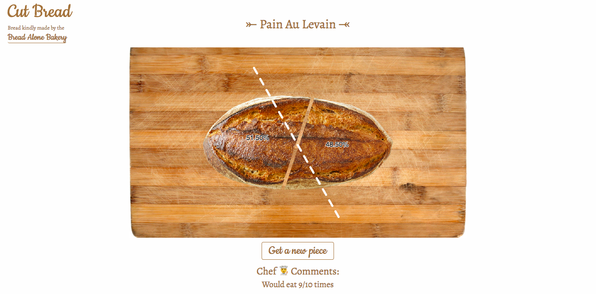

Projects
I make a range of things, from useful to useless. So, that's why there's a filter below to help you find what you seek!
AI Visuals
This is a personal project that is a website that helps visualize machine learning at work with Google's TensorFlow.js or just raw JavaScript through various webapps.
Polytomizator
This is a website that auto generates poly art. It makes use of Delaunay triangulation, image filtering, computer vision techniques, and Poisson disk sampling to help auto-generate better low-poly art.
Cut Bread
A whimsical site about cutting bread. Yep, it's literally about cutting bread and looking at how evenly you can cut it.
Simple Screensaver

A minimalist site that serves as a simple color screensaver with color palletes based on the 4 seasons: spring, summer, fall, winter.
Minions!

A site that has a watchful, attentive, and wary, but cute, Minion (From Despicable Me) that watches your every move.
I or L or 1?

Can't figure out if someone texted you an upper-case I (eye), lower-case l (el), or a 1 (one)? Type it into this website and it'll explain it for you.
Big Bang Theory Episode Name Generator

For all those Big Bang Theory fanatics out there, this site lets you generate random Big Bang Theory esque episode names. Can also play the game "Is it a real episode name?" to test your nerdiness on The Big Bang Theory.